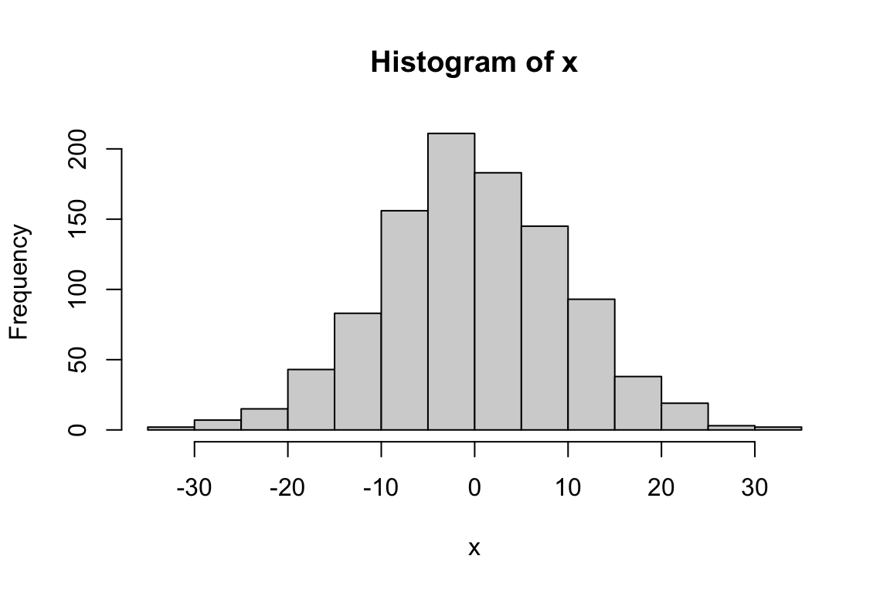
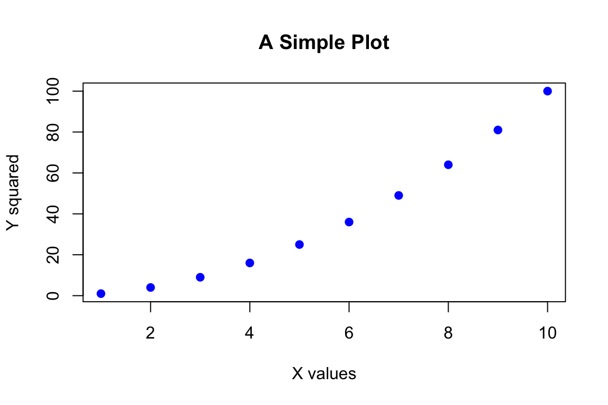

Code
4 * 4[1] 16Code
(4 + 3 * 2^2)[1] 16
R is a programming language designed specifically for statistical computing and graphics. Created in the early 1990s as an open-source implementation of the S language, R has become the lingua franca of statistical analysis in academia and is widely used in industry as well.
Several features make R particularly well-suited for data analysis. It provides an extensive collection of statistical and graphical techniques built into the language. It is powerful, flexible, and completely free. It runs on Windows, Mac, and Linux, so your code will work across platforms. New capabilities are constantly being added through packages contributed by the community, with thousands of packages available for specialized analyses.
R excels at reproducibility. You can keep your scripts to document exactly what analyses you performed. Unlike point-and-click software where actions leave no trace, R code provides a complete record of your analytical workflow. This record can be shared with collaborators, included in publications, and revisited years later when you need to remember how you produced a particular result.
You can write your own functions in R, extending the language to meet your specific needs. Extensive online help and active user communities mean that answers to most questions are a web search away. The RStudio integrated development environment makes working with R much more pleasant, especially for newcomers. And with tools like R Markdown and Quarto, you can embed your analyses in polished documents, presentations, websites, and books—this book itself was created with these tools.
R must be installed before RStudio. Download R from https://www.r-project.org, selecting the version appropriate for your operating system. Follow the installation instructions for your platform.
RStudio is an integrated development environment (IDE) that makes working with R much easier. Download the free RStudio Desktop from https://www.rstudio.com. RStudio provides a console for running R commands, an editor for writing scripts, tools for viewing plots and data, and integration with version control systems.
After installing both programs, launch RStudio. You will see a window divided into panes, each serving a different purpose. The console pane is where R commands are executed. The source pane is where you edit scripts and documents. The environment pane shows what objects currently exist in your R session. The files/plots/packages/help pane provides access to various utilities.
R evaluates expressions and returns results. You can use it as a calculator by typing arithmetic expressions at the console.
4 * 4[1] 16(4 + 3 * 2^2)[1] 16Notice that R follows standard mathematical order of operations: exponentiation before multiplication and division, which come before addition and subtraction. Parentheses can override this ordering.
More useful than evaluating isolated expressions is storing values in variables for later use. Variables are assigned using the <- operator (a less-than sign followed by a hyphen).
x <- 2
x * 3[1] 6y <- x * 3
y - 2[1] 4Variable names must begin with a letter but can contain letters, numbers, periods, and underscores after the first character. R is case-sensitive, so myVariable, MyVariable, and myvariable are three different names. Choose descriptive names that make your code readable.
Note that when you assign a value to a variable, R does not print anything. To see a variable’s value, type its name alone or use the print() function.
z <- 100
z[1] 100print(z)[1] 100Functions are the workhorses of R. A function takes inputs (called arguments), performs some operation, and returns an output. R has many built-in functions, and packages provide thousands more.
log(10)[1] 2.302585sqrt(16)[1] 4exp(1)[1] 2.718282Functions are called by typing their name followed by parentheses containing their arguments. Many functions accept multiple arguments, separated by commas. Arguments can be specified by position or by name.
round(3.14159, digits = 2)[1] 3.14round(3.14159, 2) # same result, argument specified by position[1] 3.14To learn about a function, use the help system. Type ?functionname or help(functionname) to open the documentation.
?round
help(sqrt)The fundamental data structure in R is the vector, an ordered collection of values of the same type. You create vectors using the c() function (for concatenate or combine).
numbers <- c(1, 2, 3, 4, 5)
numbers[1] 1 2 3 4 5names <- c("Alice", "Bob", "Carol")
names[1] "Alice" "Bob" "Carol"Many operations in R are vectorized, meaning they operate on entire vectors at once rather than requiring you to loop through elements.
numbers * 2[1] 2 4 6 8 10numbers + 10[1] 11 12 13 14 15numbers^2[1] 1 4 9 16 25You can access individual elements using square brackets with an index (R uses 1-based indexing, so the first element is at position 1).
numbers[1][1] 1numbers[3][1] 3numbers[c(1, 3, 5)][1] 1 3 5R provides convenient functions for creating regular sequences.
1:10 [1] 1 2 3 4 5 6 7 8 9 10seq(0, 10, by = 2)[1] 0 2 4 6 8 10seq(0, 1, length.out = 5)[1] 0.00 0.25 0.50 0.75 1.00rep(1, times = 5)[1] 1 1 1 1 1rep(c(1, 2), times = 3)[1] 1 2 1 2 1 2R can generate random numbers from various probability distributions, which is invaluable for simulation and understanding statistical concepts.
# Draw 1000 values from a normal distribution with mean 0 and SD 10
x <- rnorm(1000, mean = 0, sd = 10)
hist(x)
# Draw from a binomial distribution: 1000 experiments, 20 trials each, p=0.5
heads <- rbinom(n = 1000, size = 20, prob = 0.5)
hist(heads)
The set.seed() function allows you to make random simulations reproducible by initializing the random number generator to a known state.
set.seed(42)
rnorm(5)[1] 1.3709584 -0.5646982 0.3631284 0.6328626 0.4042683set.seed(42) # same seed produces same "random" numbers
rnorm(5)[1] 1.3709584 -0.5646982 0.3631284 0.6328626 0.4042683Data frames are R’s structure for tabular data—rows of observations and columns of variables. Each column can contain a different type of data (numeric, character, logical), but all values within a column must be the same type.
# Create a data frame from vectors
hydrogel_concentration <- factor(c("low", "high", "high", "high",
"medium", "medium", "medium", "low"))
compression <- c(3.4, 3.4, 8.4, 3, 5.6, 8.1, 8.3, 4.5)
conductivity <- c(0, 9.2, 3.8, 5, 5.6, 4.1, 7.1, 5.3)
mydata <- data.frame(hydrogel_concentration, compression, conductivity)
mydata hydrogel_concentration compression conductivity
1 low 3.4 0.0
2 high 3.4 9.2
3 high 8.4 3.8
4 high 3.0 5.0
5 medium 5.6 5.6
6 medium 8.1 4.1
7 medium 8.3 7.1
8 low 4.5 5.3Access columns using the $ operator or square brackets.
mydata$compression[1] 3.4 3.4 8.4 3.0 5.6 8.1 8.3 4.5mydata[, 2] # second column[1] 3.4 3.4 8.4 3.0 5.6 8.1 8.3 4.5mydata[1, ] # first row hydrogel_concentration compression conductivity
1 low 3.4 0mydata[1, 2] # first row, second column[1] 3.4Real analyses typically begin by reading data from external files. R provides functions for various file formats.
# Read comma-separated values
data <- read.csv("mydata.csv")
# Read tab-separated values
data <- read.table("mydata.txt", header = TRUE, sep = "\t")
# Read Excel files (requires readxl package)
library(readxl)
data <- read_excel("mydata.xlsx")Similarly, you can write data to files.
write.csv(mydata, "output.csv", row.names = FALSE)
write.table(mydata, "output.txt", sep = "\t", row.names = FALSE)R has extensive graphics capabilities. The base plot() function creates scatterplots and other basic visualizations.
x <- 1:10
y <- x^2
plot(x, y,
xlab = "X values",
ylab = "Y squared",
main = "A Simple Plot",
col = "blue",
pch = 19)
Histograms visualize the distribution of a single variable.
data <- rnorm(1000)
hist(data, breaks = 30, col = "lightblue", main = "Normal Distribution")
Boxplots compare distributions across groups.
boxplot(compression ~ hydrogel_concentration, data = mydata,
xlab = "Concentration", ylab = "Compression")
We will explore the more sophisticated ggplot2 package for graphics in a later chapter.
While you can type commands directly at the console, for anything beyond simple explorations you should write scripts—text files containing R commands that can be saved, edited, and rerun.
In RStudio, create a new script with File > New File > R Script. Type your commands in the script editor, and run them by placing your cursor on a line and pressing Ctrl+Enter (Cmd+Enter on Mac) or by selecting code and clicking Run.
Scripts should be self-contained, including all the commands needed to reproduce your analysis from start to finish. Begin scripts by loading required packages, then reading data, then performing analyses. Add comments (lines beginning with #) to explain what your code does and why.
# Analysis of hydrogel mechanical properties
# Author: Your Name
# Date: 2025-04-01
# Load required packages
library(tidyverse)
# Read data
data <- read.csv("hydrogel_data.csv")
# Calculate summary statistics
summary(data)
# Create visualization
ggplot(data, aes(x = concentration, y = compression)) +
geom_boxplot()When you encounter problems, R provides several resources. The ? operator opens documentation for functions. The help.search() function searches the help system for topics. The example() function runs examples from a function’s documentation.
?mean
help.search("regression")
example(plot)Beyond R’s built-in help, the internet offers vast resources. Stack Overflow has answers to almost any R question you can imagine. Package vignettes provide tutorials for specific packages. The RStudio community forums are welcoming to beginners.
When asking for help online, provide a minimal reproducible example—the smallest piece of code that demonstrates your problem, including sample data. This makes it much easier for others to understand and solve your issue.